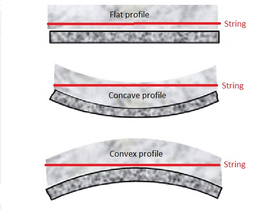

source: stickist.com post by user WerkSpace
I use the terms convex and concave.

Ideally the fretboard should be as flat as possible. On my Railboard, a slightly concave fretboard works best.
The Railboard uses a divided truss rod that is anchored in the center of the fretboard. This design gives you the opportunity to adjust the fretboard halves independently from each other.
To adjust the Railboard fretboard more concave, you need to move the adjustment nut towards the end of the instrument.
To adjust the Railboard fretboard more convex, you need to move the adjustment nut towards the center of the instrument.
I've been experimenting with setting up the string height on my Railboard. I start with a very flat fretboard. This is verified by looking down the length of the Railboard while pointing one end at a ceiling light while viewing the fretboard from the opposite end. I sometimes flip it around the other way for verification.
In my case, the truss rods are completely backed off with no force in either direction. I thought that this was odd, but that is where it's the flattest.
I set my bridge and adjustable nut flap, so the strings are the same (1mm height on either end of the fretboard).
I tap a note at the center of the fretboard (just above the anchor for the double truss rods). The note rings clear. (If it didn't ring clear, I would have to raise the string height on either end.) I work my way along in either direction testing notes for buzzing. (with a difference) I hold pressure on the fret above the note that I'm tapping. (i.e. nut side) I move along until I hear a note buzz, or not ringing clear. When I find a note that doesn't sound proper, I adjust the truss rod on that side until the note rings clear.
In my case, I had to increase/extend the both truss rods to provide a slightly concave fretboard. This sounds counter intuitive to the way that I thought it would work. When I visually check the clearance between the string and each of the fret rods, I'm at the lowest that I can go.
The end of this story is my Railboard is much easier to play now. The strings are now at 1mm clearance and the notes ring clear without any buzzing. The entire process was figured out by observing how the double truss rod was designed.